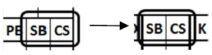

| Vérifiez que l’heure de fin et la durée de la partie ont été saisies. |
| Vérifiez que le total des points a été inscrit dans l’espace prévu à cet effet, manche par manche. |
|
Vérifiez que les totaux inscrits dans la partie inférieure de la dernière manche correspondent aux totaux offensifs de cette même équipe, ainsi qu’aux totaux des lanceurs et des joueurs de champ de l’équipe adverse. Plus précisément :
-
Le nombre de présences au bâton (AB), de points marqués (R) et de coups sûrs (H) doit correspondre aux totaux offensifs de la même équipe.;

-
Le nombre de présences au bâton (AB), de points marqués (R), de points mérités (ER) et de coups sûrs (H) doit correspondre aux totaux des lanceurs de l’équipe adverse.

-
Les assistances (A) et les erreurs (E) doivent correspondre aux totaux défensifs de l’équipe adverse.

Vérifiez que les totaux des statistiques offensives et les totaux des statistiques des lanceurs de l’équipe adverse sont identiques.

Vérifiez les données qui n’ont pas de correspondance sur l’autre feuille :
-
Double jeu provoqué par un frappeur (GDP) : vérifiez que les doubles jeux sont bien enregistrés dans les statistiques défensives de l'équipe adverse et que le frappeur a effectivement provoqué un double jeu. Le nombre de GDP doit toujours être inférieur ou égal au nombre de doubles jeux crédités à l'équipe adverse. S'il est supérieur, cela signifie qu'une action particulière a eu lieu, par exemple un GDP noté « 6E3 ».. -

Points produits (RBI) : vérifiez que ce chiffre n’est pas supérieur au nombre total de points marqués par l’équipe. Si le total est inférieur, assurez-vous que la différence ne correspond pas, en réalité, à des points produits. Le nombre de points produits doit toujours être inférieur ou égal au nombre de points marqués par la même équipe.. -
Les lancers fous (WP) et les fautes du lanceur (BK), ainsi que les balles échappées par le receveur (PB), doivent être vérifiés visuellement en consultant la section centrale de la feuille de scorage de l’équipe adverse.
| Vérifiez que les totaux des données relatives aux actions offensives qui correspondent à des éléments concernant les statistiques des receveurs de l’équipe adverse sont identiques.. |
 |
| Vérifiez s'il existe des bases volés (SB) ou des retraits sur tentative de vol (CS) qui n'ont pas été attribués au receveur. Si tel est le cas, inscrivez le nombre correspondant celui qui n'a pas été attribué au receveur sur les lignes colorées réservées aux lanceurs. En procédant ainsi, le nombre total de bases volés ou de retraits sur tentative de vol attribués aux receveurs et aux lanceurs doit toujours correspondre au nombre de bases volés ou de retraits sur tentative de vol enregistrés pour l'équipe adverse. Pour les bases volés, ajoutez une précision dans la section des remarques. |
|
Vérifiez si des points mérités ont été comptabilisés contre le ou les lanceurs sans pour autant être attribués à l’équipe. Si tel est le cas, inscrivez le total de l’équipe dans un cercle au-dessus du total des points mérités comptabilisés contre le ou les lanceurs.
| Par exemple, si le total des points mérités concédés par le ou les lanceurs est de 10, et que deux de ces points ne sont pas considérés comme mérités pour l’équipe, inscrivez « 8 » au-dessus du total correspondant au(x) lanceur(s). Le nombre de points mérités concédés par l’équipe doit toujours être inférieur ou égal au nombre de points mérités concédés par le ou les lanceurs de cette même équipe. |
|
Vérifiez que le nombre total de retraits (PO) enregistrés dans les statistiques défensives correspond au nombre de manches jouées, multiplié par trois. Chaque fraction de manche équivaut à un retrait ; par conséquent, si 8,2 manches ont été jouées, le nombre de retraits doit être de 26 (8 x 3 + 2).
Dans les matchs marqués par de nombreux changements et remplacements, il est toujours judicieux de vérifier la répartition des manches jouées pour chaque rôle défensif, ainsi que pour chaque position dans l’alignement.